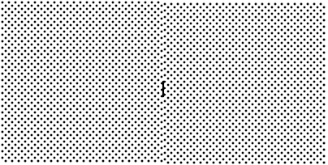
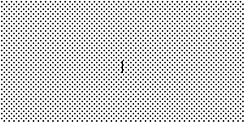

Это может показаться чересчур придирчивым моментом стиля, но если вы рисуете графическое изображение, в котором два объекта имеют штриховые узоры, настоящий профессионал обязательно убедится, что узоры выравниваются вдоль их границы.
Вот пример. На левом снимке экрана показаны два смежных квадрата размером 100×100 со штриховым узором "gray12", но правый квадрат смещен вертикально на один пиксель. Короткая черная линия по центру изображения нарисована вдоль границы двух фигур.
 
На втором снимке экрана та же самая ситуация, за исключением того, что два квадрата размером 100×100 имеют выровненные штриховые узоры.
На практике это возникает в двух ситуациях. Выравнивание больших штрихованных областей контролируется с помощью опции с именем offset. Для фигур с штриховыми контурами опция outlineoffset управляет их выравниванием. Обе опции могут принимать значения в одном из следующих форматов:
'x,y': Смещение штриховых узоров на это значение x и y относительно верхнего уровня окна или начала холста.
'#x,y': Для объектов на холсте используйте смещение x и y относительно верхнего уровня окна.
tk.NE, tk.SE, tk.SW, tk.NW: Выравнивание угла штрихового узора с соответствующим углом содержащего объекта. Например, tk.NE означает, что верхний левый угол штрихового узора совпадает с верхним левым углом области, которую нужно заштриховать.
tk.N, tk.E, tk.S, tk.W: Выравнивание штрихового узора с центром одной из сторон содержащего объекта. Например, tk.E означает, что центр штрихового узора будет совпадать с центром правой стороны области, которую нужно заштриховать.
tk.CENTER: Выравнивание центра штрихового узора с центром содержащего объекта.